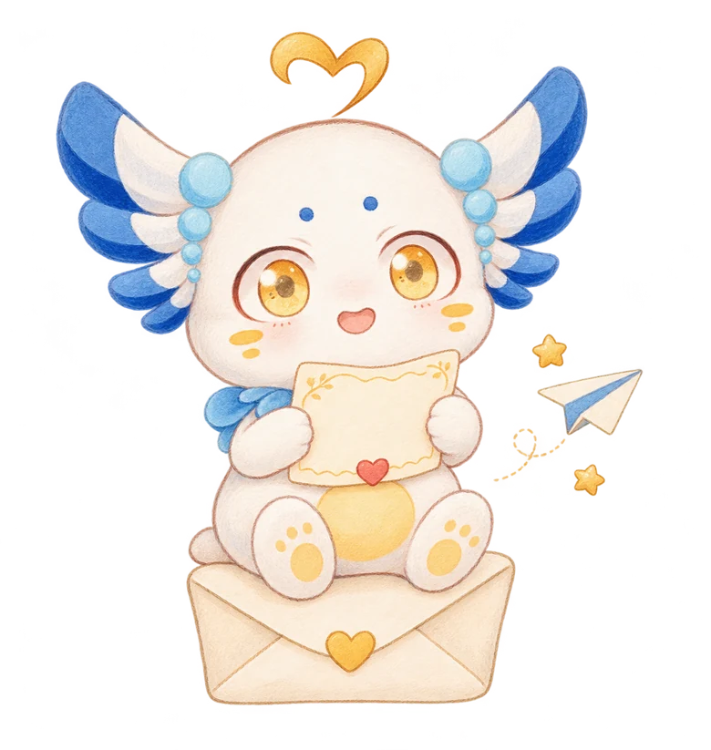
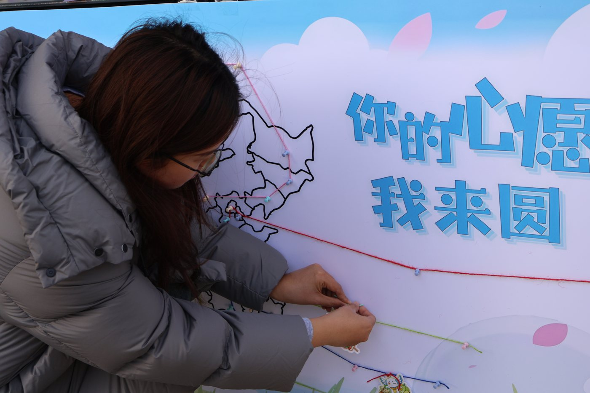
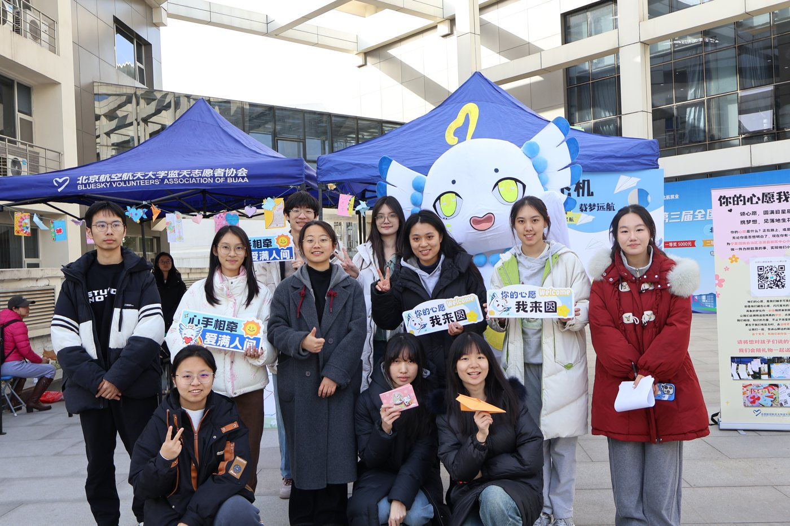
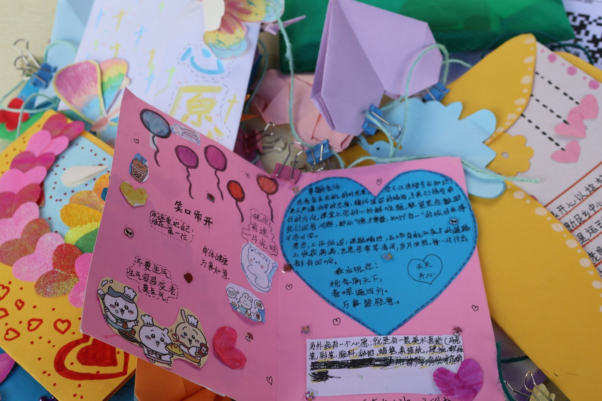
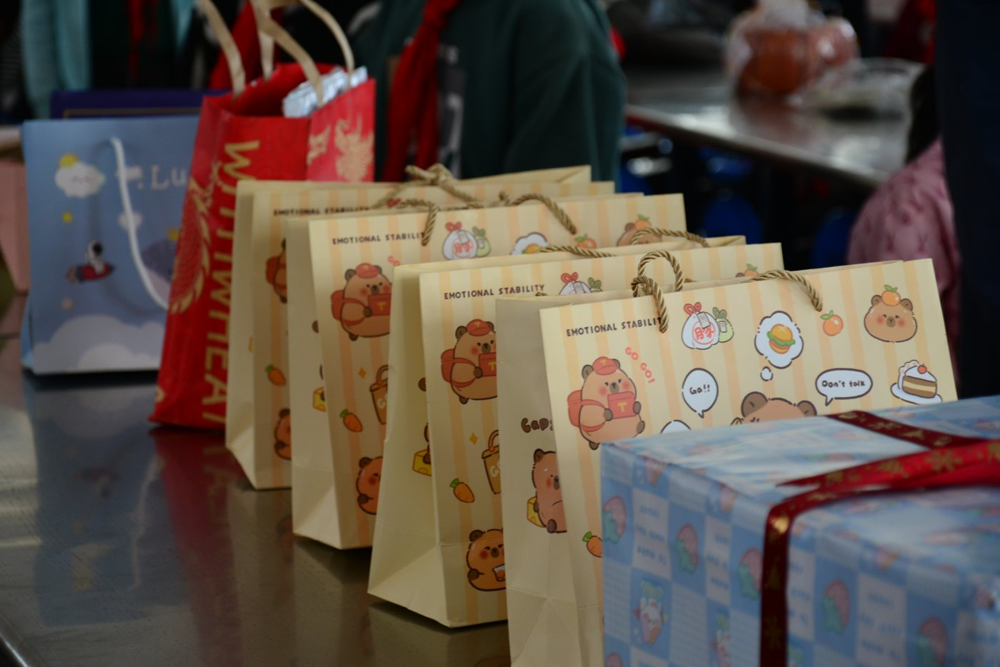
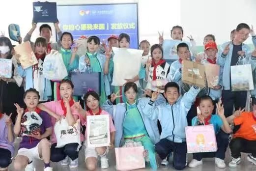
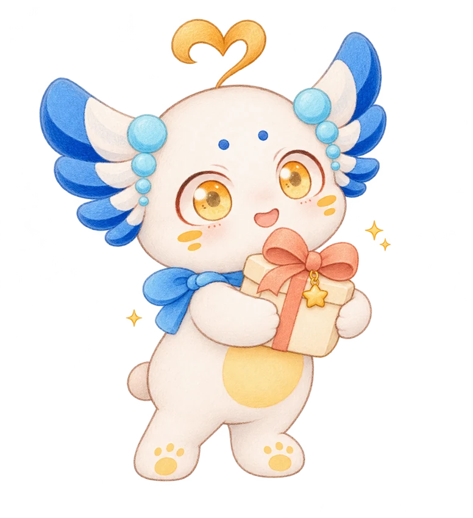
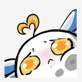

2026 · 你的心愿我来圆
小小心愿，
等一个温暖的你。
从宁夏的课堂，到北航的你。
孩子们把期待写进卡片，
我们一起，把回应送到他们身边。

每一份期待，都值得被看见。
心愿不必很大，
被认真回应，就很珍贵。
THE WISH ROOM · 心愿放映室
打开一张，读懂一份期待
这里是孩子们亲手制作的心愿卡。轻点照片，读一读他们的愿望。
选择一所学校，慢慢读一份期待。
轻点放大 · 左右翻页 · 双指缩放
MORE THAN A GIFT
送出的是礼物，也是一句「你的心愿，我记得」。
「你的心愿我来圆」是北京航空航天大学蓝天志愿者协会的志愿活动。我们把孩子们的手写心愿带到校园，邀请北航师生认领，用一份准备好的礼物，回应一份认真写下的期待。
今年，这份连接来到宁夏的兴盛小学和新民小学。两所学校，120 张心愿卡，每一张背后，都是一个具体而珍贵的小小愿望。
MOMENTS OF WARMTH · 往年活动记录
温暖发生过，
也会继续发生。
从校园里的相遇，到礼物抵达的笑容。把这些瞬间，翻给你看。


2025 · 学院路校园外场
把远方的心愿，连到身边。


2025 · 学院路志愿者合影
一起做，就有了更多可能。


2025 · 现场展示的手写心愿卡
每一种笔迹，都值得认真读。


往年 · 礼物汇集记录
一份份心意，准备好出发。


往年 · 心愿礼物发放记录
抵达的礼物，也抵达了心里。
左右滑动翻阅 · 轻点照片放大收藏往年的温暖，期待与你写下新的故事。
PASS THE WARMTH ON · 让心愿继续向前
一份温暖，
从这里开始。
先读一张卡片，再认真准备一次回应。

- 读一读
遇见心愿
读一读孩子亲手写下的期待，选择一份你愿意、也有能力实现的心愿。
- 认领这一步
前往问卷认领
从公众号当期活动推送进入问卷，核对对应心愿编号，再选择并确认认领。
- 准备好
把心意装进礼物
对照心愿准备礼物，再按公众号推送中的交接指引，将这份心意交给志愿者。
- 送远方
让温暖抵达
关注后续礼物汇集、寄送与活动反馈，见证这一份心愿的旅程。
关注「北航蓝天志愿者协会」，查看当期推送中的认领问卷与礼物交接指引。
A FEW LITTLE ANSWERS
你可能还想知道

怎样正式认领一份心愿？
先选择一份你愿意、也有能力实现的心愿，再从「北航蓝天志愿者协会」公众号当期推送进入问卷。核对学校、心愿内容及对应编号，选择并确认认领。
照片顺序和问卷顺序一样吗？
网页照片的排列顺序不对应问卷编号。请以问卷中的编号和心愿信息为准，对照学校与心愿内容后再选择。
什么时候、在哪里交礼物？
礼物交接的时间、地点与方式，请查看公众号活动推送中的详细指引，按要求准备好礼物，再将这份心意交给志愿者。
除了认领心愿，还能怎样参与？
可以先读一读、关注活动进展，也可以把这个页面分享给朋友，让更多人看见孩子们的心愿。
山那边的期待，
因你，多了一种可能。